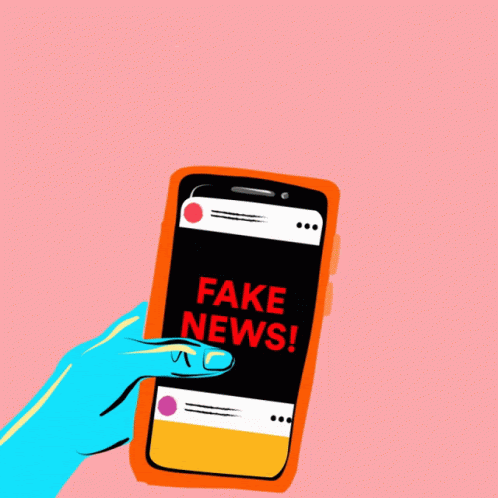

A expressão fake news ganhou as páginas dos jornais e a internet nos últimos anos.
No entanto, nem todos sabem ao certo o que significa fake news. O termo vem do
inglês fake (falsa/falso) e news (notícias). Dessa forma, em português, a palavra
significa notícias falsas. Apesar de ter se destacado recentemente, a expressão
é bem mais antiga e data do final do br século XIX. Fake News são as informações
falsas que viralizam entre a população como se fosse verdade. Atualmente, elas estão,
principalmente, relacionadas às redes sociais.
A internet possibilita que as notícias se espalhem em uma velocidade cada vez mais rápida. E as redes sociais aceleraram ainda mais esse processo. Entretanto, o espaço também é propício para que as notícias falsas também sejam facilmente divulgadas. Além disso, outro fator importante é que as pessoas perderam o costume de verificar as fontes de um dado. Quando algo é publicado, automaticamente há centenas de compartilhamentos sem nem ao menos chegar de onde partiu aquela notícia. O período das eleições tem levantado o debate sobre o perigo das fake news. Ultimamente criou-se uma espécie de guerra entre os envolvidos no processo eleitoral para derrubar os candidatos adversários com a divulgação de notícias falas na internet. Escândalos de criação de departamentos especializados na criação e propagação de informações inverídicas ganhou as manchetes em todo o mundo.
Existem diferentes formas de criar fake news. Desde uma simples publicação nas redes sociais a empresas que são especialistas em viralizar informações falsas. Os objetivos também variam e podem ter o intuito de atrair visualizações para páginas nas mídias sociais ou até mesmo disseminar o ódio contra pessoas, instituições, empresas, governos, etc. As empresas especializadas estão presentes na chamada deep web, uma parte mais restrita e oculta ao grande público, pois não aparece nos motores de busca. De modo geral, é criada uma página na internet e um robô responsável por espalhar o link da fake news em diferentes redes, de forma bastante maçante. A informação pode chegar a ser replicada até mesmo a cada dois segundos pelos robôs. É dessa forma que os boatos ganham proporções inimagináveis.
Com o impacto cada vez mais das fake news no cotidiano, algumas plataformas surgiram com o intuito de verificar a veracidade das informações. Também conhecidas como fact-checking, elas analisam as notícias mais compartilhadas e verificam se os dados condizem com a realidade. Confira uma lista delas abaixo:
No Brasil a legislação ainda não trata especificamente da criação e compartilhamento de notícias falsas. Os advogados têm buscado formas para lidar com as fake news. De modo geral, os profissionais seguem o que está previsto no Código Penal para os casos de calúnia, injúria e difamação. Para além da legislação, é fundamental que haja políticas de conscientização da população para o perigo de replicar as informações falsas. Cada cidadão também deve assumir o compromisso de verificar os fatos antes de compartilhá-los na rede e até mesmo de acreditar em tudo o que circula nas redes sociais.
Andrey e Carolina pires ©